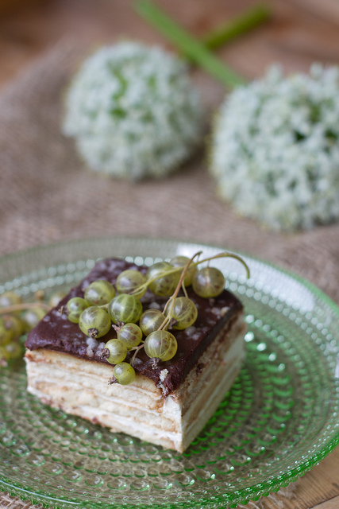

Cookie Cake Recipe
Ingredients
| Ingredient |
Amount |
| Square cookies |
3-4 packs (163 g each) |
| Milk |
1-2 dl |
| Sour cream (20% fat) |
750 g |
| Dark chocolate |
100 g |
| Butter |
50 g |
| Heavy cream (35% fat) |
0.5 dl |
| Pearl sugar |
1/4 cup |
Instructions
- Prepare the base:
- Dip cookies quickly in milk and layer them in a cake pan or dish to form the base.
- Spread a layer of sour cream evenly over the cookies.
- Repeat the layers until you've used all the cookies and sour cream, ending with a layer of sour cream.
- Make the chocolate glaze:
- Melt the dark chocolate and butter in a saucepan over low heat.
- Stir in the heavy cream and mix until smooth.
- Top and decorate:
- Pour the chocolate glaze over the cake, covering the top layer.
- Sprinkle with pearl sugar for decoration.
- Chill:
- Refrigerate for at least 4-5 hours (or overnight) to allow the cookies to soften and the cake to set.

Source:
nami-nami.ee